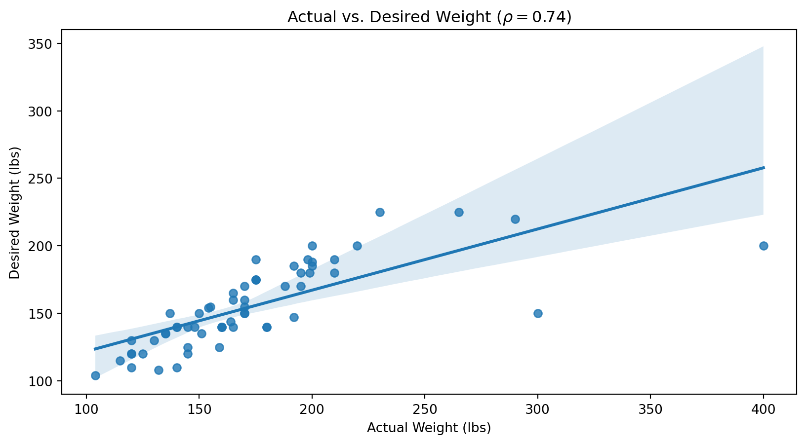
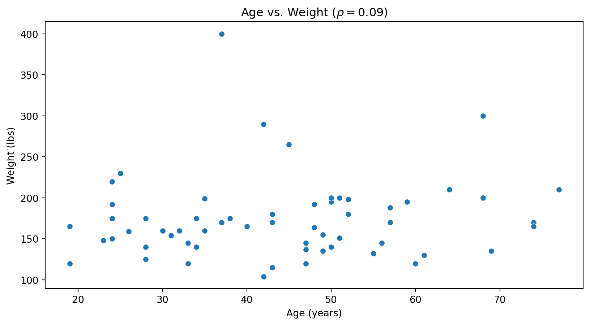
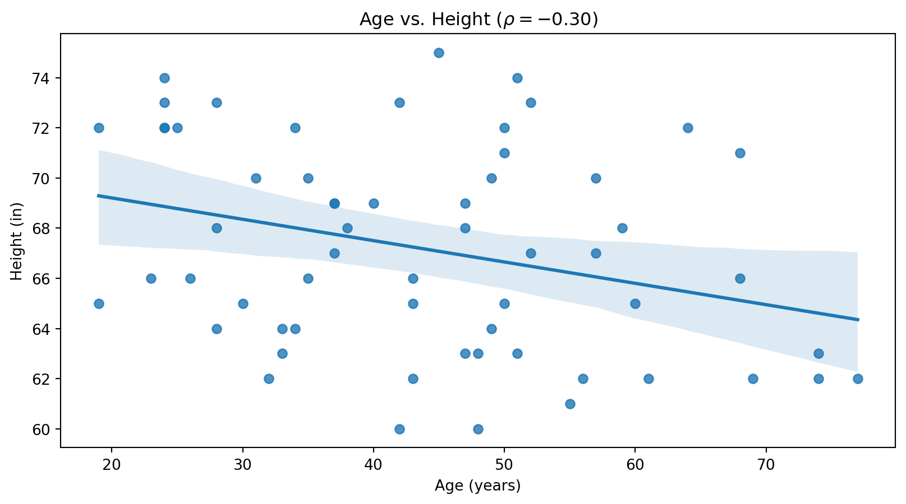
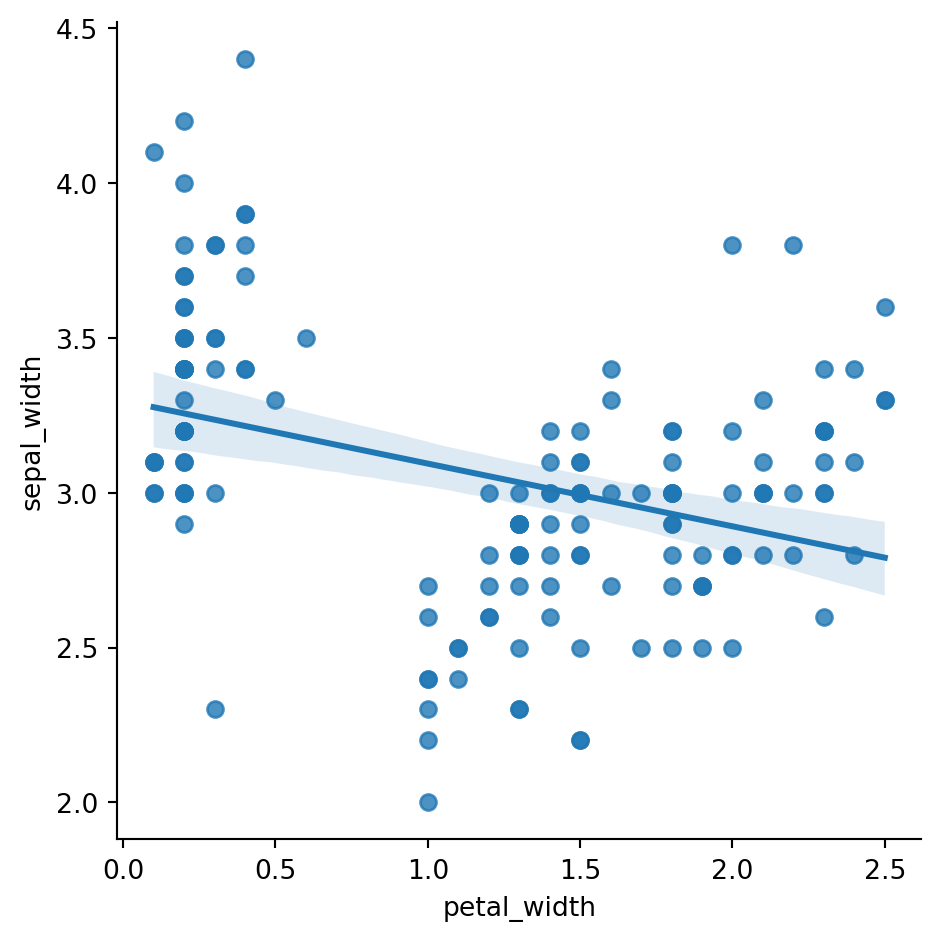
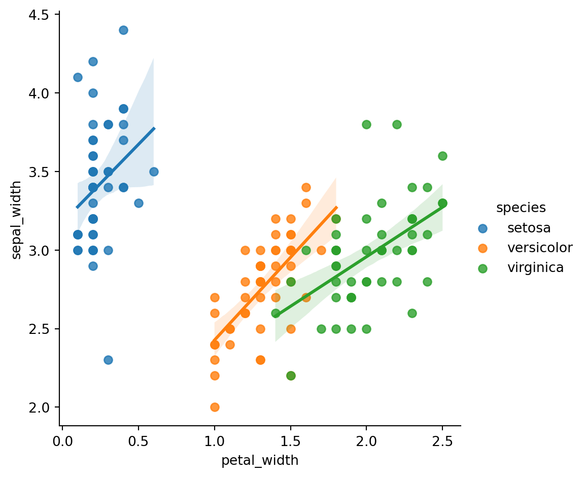

Interrelationships between variables
Based on your best understanding or best guess…
Just how correlated are two numerical variables?
The correlation coefficient \(\rho\) measures strength and direction of correlation.
Use df.corr(numeric_only=True) to calculate.
\(\rho\) nearly 1: x and y are strongly positively correlated.
\(\rho\) nearly 0: x and y are independent, at least not linearly correlated.
\(\rho\) nearly -1: x and y are strongly negatively correlated.
Correlations quickly flag trends and interrelationships for further study.
A scatterplot is 2D graph depicting each data case as a point positioned on an \(x\)-axis according to one variable and on the \(y\)-axis according to another. Like most graphs, they primarily target sighted users.

A scatterplot is 2D graph depicting each data case as a point positioned on an \(x\)-axis according to one variable and on the \(y\)-axis according to another. Like most graphs, they primarily target sighted users.

A scatterplot is a 2D graph depicting each data case as a point positioned on an \(x\)-axis according to one variable and on the \(y\)-axis according to another. Like most graphs, they primarily target sighted users.

Sir Ronald Fisher, British statistician and geneticist, introduced his now famous Iris data in 1936, with 150 cases involving three very similar species:
His dataset is often used as the “hello world” of data exploration.


Matt says “Education level and political party association are positively associated.” Explain why Matt must be wrong, regardless of politics.
Fiona says “Learning piano has no bearing on hair color, and hair color does not influence piano interest or ability. Therefore hair color and piano skill are statistically independent.” Find the flaw in her logic.
Solve five problems on webwork under “2. Association and Correlation.”
As always, find the preparatory work for the next slide deck and do it before class.
{kind=link}
{kind=link}
{kind=link}